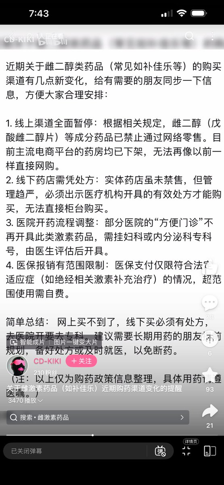

みかんミックス🍥
@mikanmkx
@SonogamiRinneTS 这种事就不在议事日程上，有家长反映问题那就一刀切了就完事了，至于跨性别者自身谁管呢，反正ta们也没什么能量去反映问题

是Rinne酱呀
@SonogamiRinneTS
我是觉得吧，上面为什么要管激素售卖，是为了担心没有正规医生的指导乱吃药吃出问题。可现实是并不是我们不想去正规医院买药，而是根本过不了家长这一关，但用药需求并不会因此消失，把正规药店的激素给下架了，大家只能跑到更不正规，风险更大的药商那里购买 https://t.co/rjepViulQh